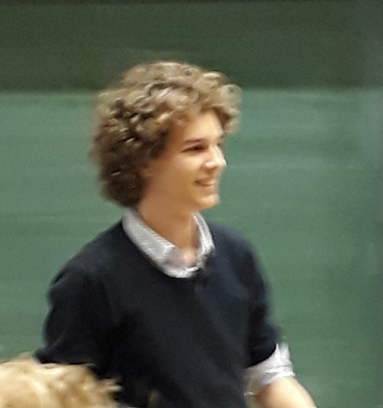

 Currently I am obtaining my double masters degree in mathematics and computer science at Utrecht University. I'm working on my master thesis in foundational computer science and category theory under the supervision of Paige North.
l.s.mulder@uu.nl